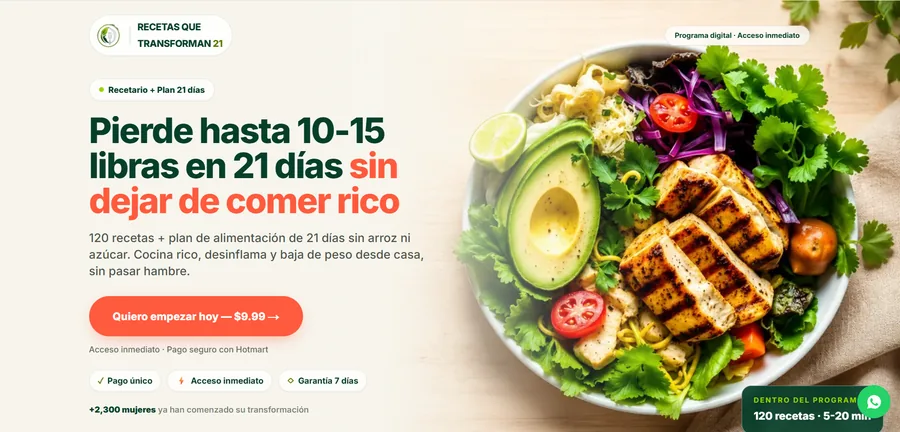
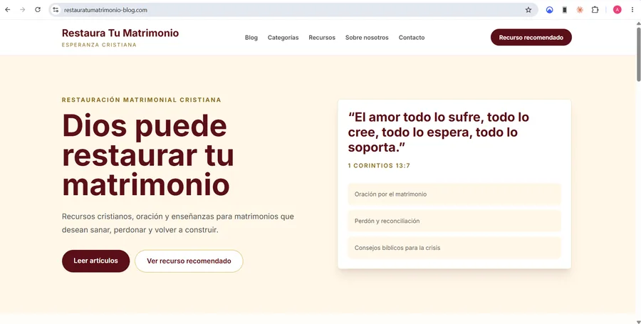
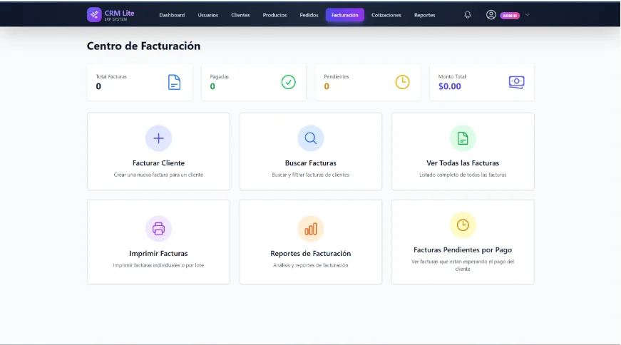

Church Program Manager
Multi-tenant system for a church to organize its service programs with real security between churches: automatic role assignment, RBAC, and PDF generation. Node.js, TypeScript, MongoDB.
View Case Study View live siteA selection of web projects including landing pages, online stores, interactive applications, and corporate websites built with modern technologies.
Back to services
Multi-tenant system for a church to organize its service programs with real security between churches: automatic role assignment, RBAC, and PDF generation. Node.js, TypeScript, MongoDB.
View Case Study View live site
Full-stack luxury concierge platform: villas, premium transportation, Stripe payments, and an admin panel with roles. Next.js, TypeScript, Prisma.
View Case Study View live site
Institutional landing page with a secure contact form (honeypot, rate limiting) and email delivery via Resend. Next.js 16, TypeScript, React 19.
View Case Study View live site
Billing and management platform for schools: tuition, delinquency, enrollment, and WhatsApp notifications. React, Vite, Tailwind CSS 4.
View Case Study View live site
Dental clinic that needed to convey a premium positioning and let patients book appointments online, with no calls or friction. Lovable, React, Tailwind CSS 4.
View project
Landing page to sell a digital nutrition program direct to consumers, with checkout integrated via Hotmart without leaving the page. Next.js, Tailwind CSS.
View project
Next.js blog with MDX, CI/CD, and dual GA4/Meta Pixel tracking. Organic funnel engine driving traffic to the course, with automatic publishing via PRs from Kingdom Studio.
View Case Study View live site
SaaS platform that generates, reviews, approves, schedules, and publishes editorial content with AI, with a control panel and analytics. FastAPI, Next.js, Supabase.
View Case Study View live site
E-commerce platform and sales management system for independent Amway distributors in the Dominican Republic. React, Node.js, MongoDB.
View Case Study View live site
Modern website for a financial cooperative with React, glassmorphism, dark mode, and Framer Motion animations.
View Case Study View live site
CRM for small teams that need to centralize clients and sales activity without paying for Salesforce licenses. React, Node.js, MySQL.
View project
E-commerce store for premium brands that need to sell products online with a polished shopping experience: catalog, cart, and smooth checkout. React, Node.js, MongoDB.
View project
Landing page for a marriage recovery course, focused on conversion, trust, and lead capture.
View Case Study View live site
Proprietary blog about AI trends, built as an organic traffic engine and AdSense monetization play, not just a technical demo. React, Vite, Tailwind.
View project
Portfolio for a fashion designer who sells to clients in different countries and needed instant price quotes in each client's own currency, with an interactive collections catalog.
View project
Reusable landing page template for launching sales pages across different industries quickly, without starting from scratch each time.
View project
Modern landing page with CSS animations, a conversion-focused structure, and optimized CTAs.
View project
Creative studio that needed its own site to showcase its portfolio and services, without relying solely on social media to attract clients.
View project
Financial mentor who needed a site with a premium look to sell trading courses and build trust before the first call.
View project
Landing page to capture leads interested in financial services, with a direct contact form as the single conversion step.
View project
Digital catalog with e-commerce structure, streamlined navigation, and conversion-focused design.
View projectTechnical exercises and experiments — not client projects, but they show how I learn and practice.

REST API for task management with JWT authentication, user roles, and a scalable structure. Node.js, Express.
View project
Interactive web app consuming a REST API, with real-time search and responsive design.
View project